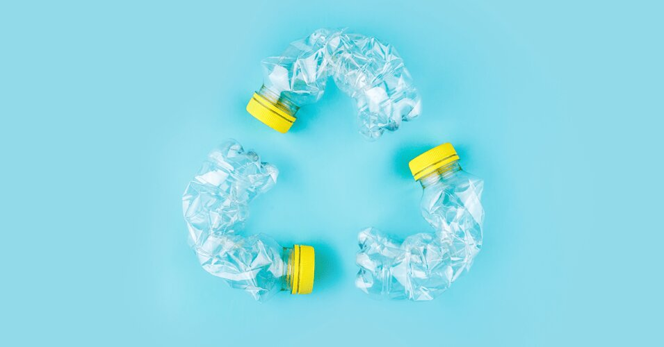
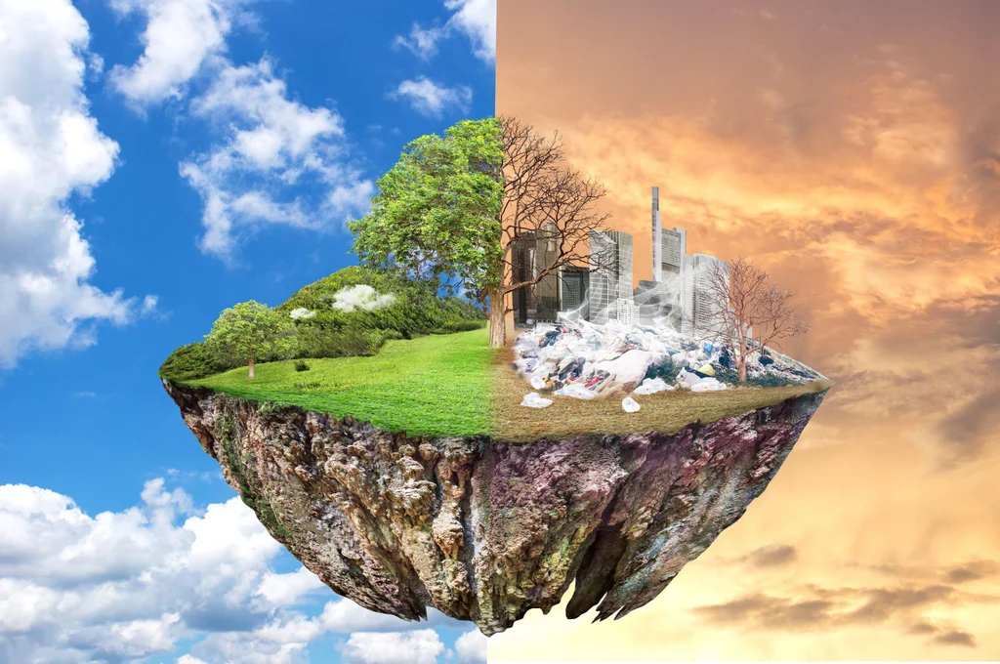
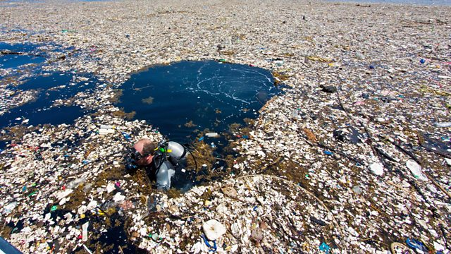
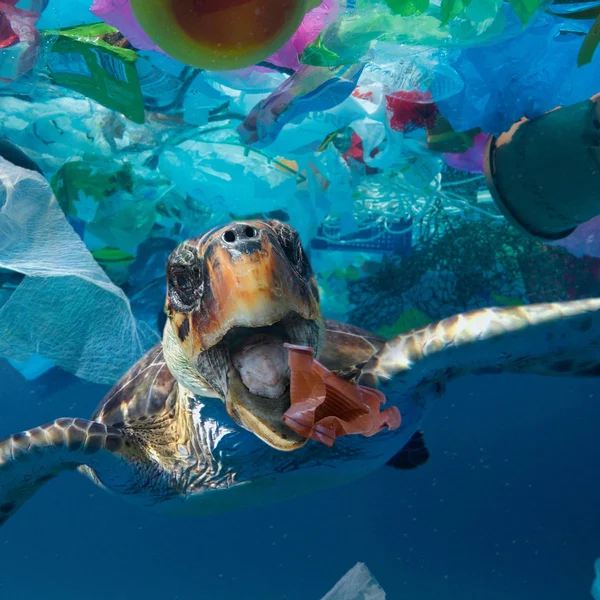

אתה יכול לדעת שכדור הארץ שלנו לא במצב הכי טוב. אבל יש דרכים לשנות את זה
יש הרבה דברים שמשפיעים לכדור הארץ ךא טוב, אבל אנחנו רוצים לדבר אל דבר אחד פלסטיק
כולנו משתמשים בפלסתיק. ואל תגיד שזה לא ככה, פלסתיק זה באמד דבר מאדהים אבל לא תמיד משתמשים בזה נכון. כולנו אוהבים בקיץ כשחם לקנות בקבוק של משקה קר ו אנחנו אפילו לא יודעם כמה בקבוקים אנחנו זורקים. או נגיד לא לישתוף קלים כל פעם נשמה מאוד קף, אך לא לכדור הארץ
אבל נתחיל ממשהוא אחר. קודם כל פלסתיק מתפרק במשח 400 שנים! בגלל זה כל המזבלות מלאות בפלסטיק שבזמנו נוצר הרבה חומרים מסובנים לסביבה שלנו שהם נוצרים את האפקת החממה וכך מקדם את התממות גלובלית
מתלחלח את האוקיינוס
יש היום טונות של פלסתיק באוקיינוס וזה מונע מאיתנו מים טהורים שבזמנו מוכריך אותנו לבזבז יותר אנרגיה לניקוי המים וגם מקלקל את בית הגידול של הרבה בעלי חיים
מקרי מוות רבים של בעלי חיים
כמו שכבר אמרנו יש עשרות או אפילו מאות טונות של פלסתיק באוקינוס. הפלאסתיק הזא לא רק מתלכלך את בית הגידוך של בעליי חיים, הוא גם הורג אותם. בעלי חיים נתקאים בכל פלסתיק הזה וגם אוכלים אותו ובגלל זה מתים.
אם אנחנו נשתמשש בפלסתיק פחות אז אנחנו מאוד נעזור לכדור הארצ שלנו
פחות להשתמש בסקיות חד פעמיות
אחוז גדול מכל הפלסתיק זה סקיות ניילון. אם אתה תיקח פחות סקיות בחנות ופחות תשתמש בהם אתה תעזור לכדור הארצ הרבה. ולחנות אפשר לקנות תיק או שופר. תודה
מזון
כשאתה תקנה אוכל פעם הבא תסים לב באיזה אריזה האוכל באה, אם זה סקית נילון אז אולי תחפס את זה באריזה אחרת? תודה
אל תשתמש בדברים חד פעמים
כאיקרון בכלים חד פעמים. מזלגות, כפיות, צלחות, סקינים וכשיות. אל תהיה אצלן! תשתופ כלם אחרך
אנו מקווים שאתה תחשוב אל כמות הפלסתיק שאנחנו משתמשים ואל התנצלות של כדור הארץ. מקווים שתאזור לנו
:קישורים בישבילך